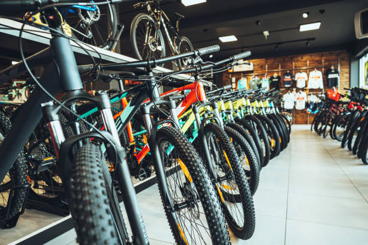
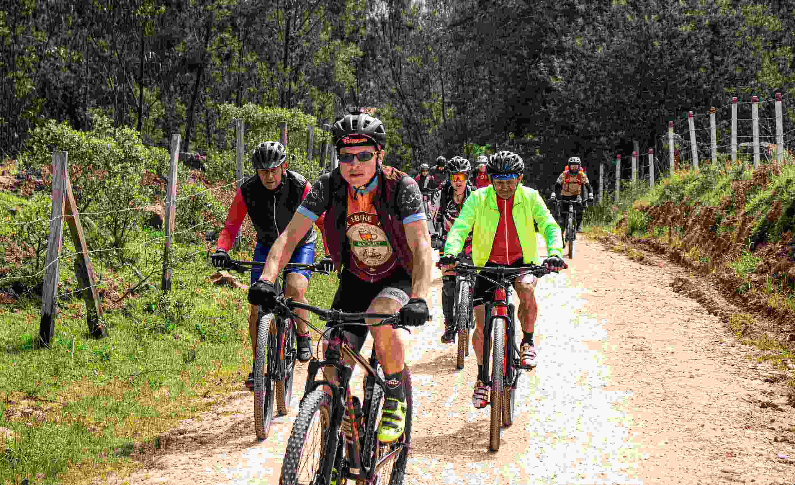

Alquiler de bicicletas

Disponemos de bicicletas urbanas y de montaña
para que elijas la que mejor se adapte a tus
necesidades. El alquiler
incluye casco y candado
para ayudarte a disfrutar del recorrido con
mayor tranquilidad.
Una forma práctica de descubrir Medellín
a tu propio ritmo.
Recorridos guiados

Organizamos recorridos por lugares de interés
de Medellín, acompañados por guías locales.
Conocerás la ciudad, sus paisajes y su cultura
mientras disfrutas de la bicicleta.
Una experiencia para disfrutar en grupo
y descubrir nuevos lugares.
Taller básico
Te ayudamos con ajustes sencillos, revisión
de frenos y cambios, y recomendaciones para
el cuidado de tu bicicleta.
La seguridad es nuestra prioridad.
Mantén tu bicicleta en buenas condiciones
antes de salir a rodar.